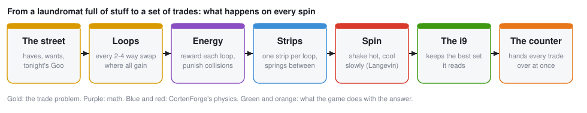
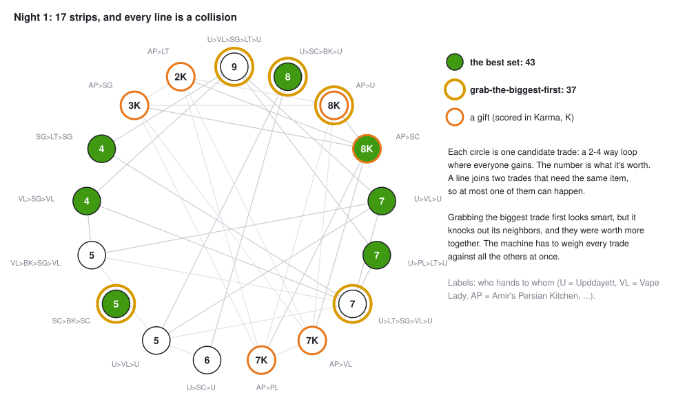
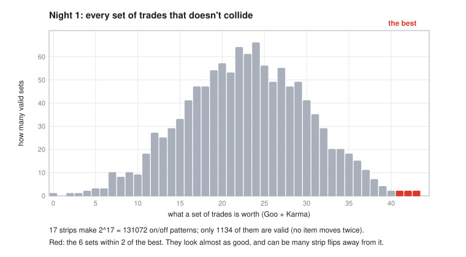
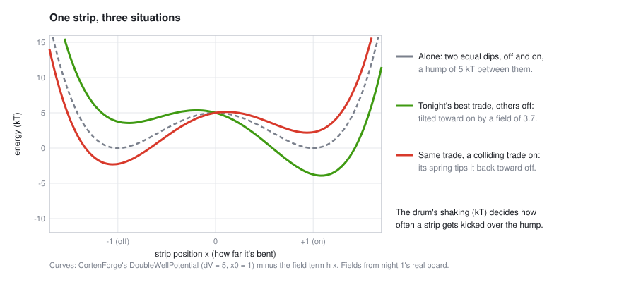
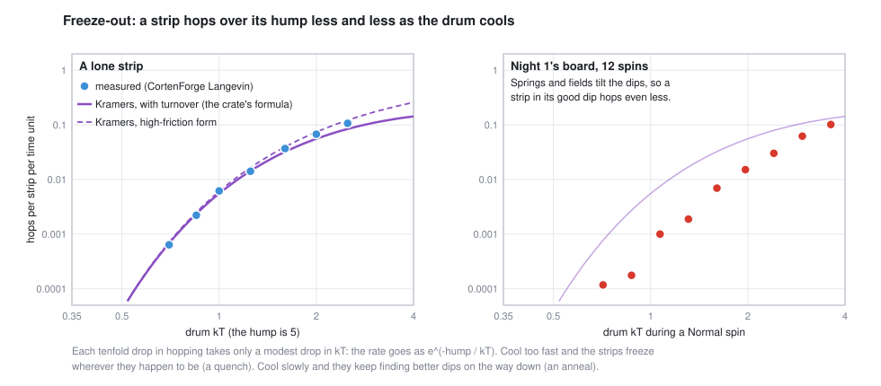
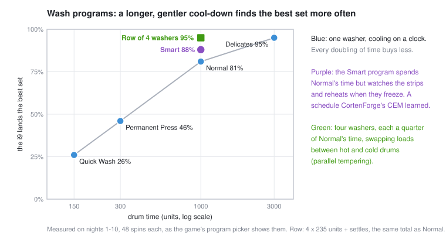

The Laundromat Trade Machine
The big washer at the back of Upddayett's laundromat isn't washing anything. It's a computer. Every night it works out who on Market St should swap what with whom, so everybody goes home better off. It does that with physics: a drum full of springy steel strips, shaken hot and cooled slowly, until the strips settle into the answer.
Every figure on this page is real data: the curves are CortenForge simulations and the boards are the game's real nights.

The puzzle
Goo, and why trades go in loops
Nobody on Market St has money. What they have is stuff, and stuff is worth different amounts to different people. The game measures that in Goo: what a thing is worth to one person, tonight (1 Goo is about a can of Mtn Goo to them). A bag of aeroponic kale might be worth 2 Goo to Upddayett and 7 to Librarian Tamara. That gap is where every trade comes from: the same thing is worth more in somebody else's hands.
A trade only happens if everyone in it comes out ahead. Two-way swaps are rare, because it has to happen that you want what I have and I want what you have. Economists call this the double coincidence of wants, and it's the reason money was invented. The machine gets around it with loops: A hands something to B, B to C, C back to A, each getting something worth more to them than what they gave. Loops go up to 4 people. Every extra person is one more way a loop can fall apart, which is why the counter holds everything until the drum stops.
Kidney exchange programs work the same way. A patient whose donor doesn't match swaps donors with another pair, in 2- and 3-way loops, with all the surgeries at once so nobody can back out. Alvin Roth shared the 2012 economics Nobel partly for designing them.
Tonight's board
Each evening the machine lists every loop where everyone gains. Each loop is a candidate trade, and each candidate gets one strip in the drum. The board also holds gifts, scored in Karma instead of Goo: a need met (food for someone hungry, warmth on a cold night) counts 1x, and a treat or a tool counts 1.5x once that person's needs are covered. Night 1, the night every figure here uses, has 17 strips: 11 trades and 6 gifts.

The obvious way to pick, taking the biggest trade first and then the biggest one that still fits, gets 37. The best set gets 43. The biggest trade (worth 9) knocks out neighbors that were worth more together. To get it right, every trade has to be weighed against all the others at once.
Why it's hard
Mathematicians call this the maximum-weight independent set problem. In general it's NP-hard: there's no known shortcut that stays fast as it grows. Each strip is on or off, so 17 strips make 217 = 131,072 patterns. Only 1,134 are valid (nothing moves twice). Most are middling, and the very top is thin and nearly tied.

At 17 strips an ordinary computer can check all 1,134 valid sets in a blink, and the game does, to know the best possible and score the machine against it. That's why the board is capped at 20 strips. The machine isn't in the game because it beats a laptop at 17 strips. It's there because it's how a whole family of real hardware works, and because you can watch it think.
Turning the puzzle into energy
Give any on/off pattern a score: add up what every "on" trade is worth, and subtract a big penalty for every pair of colliding trades that are both on. The penalty is bigger than any single trade, so a collision never pays. The best set has the highest score.
Now flip the sign and call it energy. The best set becomes the lowest-energy pattern. Nature is very good at finding low energy: water runs downhill, and hot metal cooled slowly settles into a tidy crystal. So if we build something whose energy is this score, physics does the searching.
This recipe, rewards on single bits and penalties on pairs, is called a QUBO. It maps one-to-one onto an Ising model: a lattice of little magnets that point up or down and push or pull on their neighbors. A huge range of hard problems can be written this way (Lucas, "Ising formulations of many NP problems", 2014). The exact formulas are in the math.
The strips
Each strip is a thin piece of spring steel, clamped at both ends and buckled, like the lid of a snap-top jar. It has two stable shapes: bent down (off) or bent up (on). Getting from one to the other means pushing it over a hump. In the game they're called slap bits, and the board cam in the bottom left of the screen shows them live.

Three forces act on each strip:
- The double well: the two dips and the 5 kT hump between them (
DoubleWellPotential). - A tilt toward on, as strong as the trade is valuable (
ExternalField). - Springs between strips whose trades collide (
PairwiseCoupling). When one strip goes on, its springs tip each colliding neighbor back toward off. In the red curve, tonight's best trade has a colliding trade switched on, and its "on" dip is now the shallow one.
Then the drum shakes them. CortenForge's LangevinThermostat gives every strip random kicks plus friction, balanced so the strips jiggle exactly as much as real objects at temperature kT would (the fluctuation-dissipation theorem). Turn the drum up and the kicks get stronger. A Hall-effect sensor under each strip reads which dip it's in.
All of it is a real CortenForge model, built like this:
let xml = generate_mjcf(n, 1, dt, (0.0, 10.0)); // n strips, one control: the drum
let mut model = load_model(&xml)?;
let mut b = PassiveStack::builder();
for i in 0..n {
b = b.with(DoubleWellPotential::new(delta_v, 1.0, i)); // the two dips
}
b = b.with(PairwiseCoupling::new(j, edges)); // springs between colliding trades
b = b.with(ExternalField::new(h)); // each trade's tilt toward on
b = b.with(LangevinThermostat::new(gammas, k_b_t, seed, 0)
.with_ctrl_temperature(0)); // the drum: kT follows ctrl[0]
b.build().install(&mut model);The spin: shake hot, cool slowly
Shake the drum hard and the strips hop over their humps all the time, trying everything. Shake it gently and they mostly stay put. The trick is to start hot and cool slowly. While it's hot the board explores. As it cools, hopping out of a good arrangement gets rarer than hopping into one, until the strips freeze into a set that doesn't collide and makes a lot of Goo.
That's annealing. Blacksmiths do it to steel (CortenForge is named after one, Corten), and computers have done it in software since 1983 (Kirkpatrick, Gelatt and Vecchi, "Optimization by Simulated Annealing"). The drum does it in physics.
How fast does a strip hop? Hendrik Kramers worked it out in 1940: the rate falls off like e−hump/kT, so each tenfold drop in hopping takes only a modest drop in temperature. CortenForge ships Kramers' formula, so the simulation can be checked against it:

Now watch a whole spin: one real Normal cycle on night 1, every strip, every time unit.

- The drum (red) cools geometrically from 4 kT to 0.35 kT over 1,000 time units, then stops for 20 so every strip drops into a dip.
- The strips flicker for the first ~300 units, commit one by one between 300 and 500, and after ~500 nothing moves. The green rows are tonight's trades.
- The close-up is one strip's actual position. It rattles inside its dip the whole time (that's the heat), hops between dips while the drum is hot, and settles for good at t ≈ 410.
- The score is what the strips spell out whenever all of them sit in a dip. It climbs as the board cools.
Cool too fast and the strips freeze wherever they happen to be: a quench, which lands in a mediocre set. In the game that's Quick Wash ("You spun it too fast, Daddy"). Cooling slower helps, but only logarithmically: three times longer buys a few points.
The i9 watches
Upddayett wired an old i9 to the Hall sensors. Once every time unit it reads the board. Whenever every strip sits in a dip, it scores what it sees and remembers the best set so far: the gold line in the spin figure. This one latched the best set at t = 101, long before the strips stopped moving.
The latch matters because the strips don't always finish on the best set. Near the end of a spin the board can freeze into one of those near-ties, and the i9 has usually seen something better on the way down. On night 1, out of 48 Normal spins:
Real probabilistic computers (p-bits) are read the same way: sample the bits as they fluctuate, and keep the best.
Wash programs
The program picker is a choice of cooling schedules. Longer and gentler finds the best set more often, but each doubling of time buys less.

Two programs beat the clock instead of just taking longer:
- Smart (learned). It spends Normal's time but watches the board as it spins: how far through the cool-down it is, how many strips are mid-hop, and how long since the i9 last found something better. When the strips freeze and the latch stops improving, it reheats and cools again. Nobody hand-wrote that schedule: CortenForge's CEM (the cross-entropy method in sim-rl) learned it on 11 hard nights. On fresh nights it never trained on, it lands the best set 95% of the time against Normal's 83%.
- Row of 4 washers. Normal's electricity, split across four drums held at different temperatures. Every so often neighbors offer to swap loads, so a load stuck in a bad set on a cold drum can ride up to a hot one, get shaken loose and come back down. This is parallel tempering (replica exchange). On held-out nights it beats the smart wash, 96.8% to 93.1%.
You can also run the drum by hand: the SPIN CYCLE panel's manual dial sets kT directly. Freeze it, melt it, and watch the strips.
Your hands on the machine
Everything you do in the game changes the board, and so the physics.
- I WANT... Every strip that delivers the wanted item gets an extra tilt toward on, sized to pin it like a thumb holding it down. Past a tilt of about 7.7 (for a hump of 5) the "off" dip disappears entirely. The rest of the board settles around it, and the panel tells you what the want costs everyone else, in Goo.
- Give-aways. A gift strip, scored in Karma. The drum decides who gets it, sending it where it does the most good.
- Prints. Upddayett designs a part in code and CortenForge checks it will print. It becomes a new item: new loops, new strips.
- The counter (escrow). While the drum spins, the counter holds every item. When it stops, it hands every trade over at once or not at all, so nobody in a loop is left holding nothing.
- Yuck. Some nights some people are yucky: they need 2 extra Goo out of any trade before it's worth it to them. Two yucky people cut an average night from 11.5 trades to 7.2, and the best set from 41.6 Goo to 31.1 (nights 1-30). The board gets easier, with fewer strips fighting, but poorer. The trades yuck killed show up as ghost strips.
- The Salties, saboteurs who mess with the physics:
- A magnet under the counter is a stray field: an extra tilt the i9 didn't install, pushing strips the wrong way. A coil does the same, but only while the drum shakes. A power cut stops the drum early: a quench.
- Your defenses are physics too. The idle check stops the drum and reads every strip at rest. The force from its dip has to balance the springs and tilts the i9 put there, so anything left over is a field it didn't put there. A steel shield blocks a magnet if it covers it. The battery (Vape Lady's cells) keeps the drum running through a cut, but then those cells can't be traded tonight.
Is this real?
The physics is real. The machine is made up: nobody builds trade computers out of buckled steel strips. What's real:
- The simulation is faithful. CortenForge integrates every strip's motion with the proper noise, and the hop rates match Kramers' theory within about 12% where that theory applies. That check was run for this page.
- The method is real. Simulated annealing, parallel tempering and learned schedules are everyday tools for hard optimization problems.
- The hardware family is real. Ising machines solve problems written exactly like this one, as bits with tilts and couplings settling into low energy: quantum annealers (D-Wave), digital annealers (Fujitsu), probabilistic-bit circuits, and a new wave of thermodynamic computing chips that use noise on purpose, like this drum does.
- The economics is real. Swap loops with all-or-nothing hand-offs are how kidney exchange works.
The limits: 20 strips at most, so the game can always check the answer exactly. One spin is 102,000 physics steps, about 0.4 s of CPU. Below 20 strips a brute-force check is faster. The machine is the interesting way to do it, and the way that scales.
For the curious: the math
The energy. With xi ∈ {0, 1} for strip i (1 = on), vi the trade's value scaled so the largest is 1.5, and P the collision penalty (1.6 × 1.5 = 2.4):
E(x) = − Σ_i v_i x_i + P Σ_{i,k collide} x_i x_kP is larger than any vi, so turning on a second colliding trade always costs more than it earns. The lowest-energy pattern is the best valid set.
To Ising. With spins s = 2x − 1 (on = +1) and the crate's convention H = −Σ Jik si sk − Σ hi si, take H = β E + const with β = 5 (how many kT one unit of score is worth):
J_ik = −β P / 4 (colliding pairs push apart)
h_i = β v_i / 2 − Σ_k β P / 4 (the tilt, less the collision bookkeeping)The strip. Each strip is a particle of mass 1 at position xi:
m ẍ_i = −V′(x_i) + h_i + Σ_k J_ik x_k − γ ẋ_i + √(2 γ kT / dt) · z_i
V(x) = ΔV (x² − 1)²ΔV = 5 (the hump), γ = 1 (friction), zi is fresh unit Gaussian noise each step, and dt = 0.01. A tilt above 8ΔV / (3√3) ≈ 7.7 erases the far dip; that's the want's thumb clamp.
The schedule. Normal's kT runs 4 → 0.35 geometrically over 1,000 units, then 0 for 20. The i9 samples every unit. The hop rate (Kramers, with the crate's turnover correction Υ):
k ≈ (ω_a / 2π) · (λ_r / ω_b) · e^(−ΔV / kT) · Υ| Setting | Value | What it is |
|---|---|---|
| ΔV | 5 | The hump between off and on |
| β | 5 | kT per unit of score |
| P | 2.4 | Collision penalty (1.6 × the largest value) |
| γ | 1 | Friction |
| dt | 0.01 | Physics step |
| Normal | 4 → 0.35 kT | 1,000 units, then 20 at rest |
Try it yourself
Everything runs from the source (always --release):
| Command | What it does |
|---|---|
cargo run --release | The game. Pick a program, press Run, watch the board cam. F1 opens the picture book. |
cargo run --release --example machine_figs | Redraws every figure on this site (-- spin --night 7 for one figure on another night). |
cargo run --release --example trade_cli -- cycles | Lists tonight's candidate trades. |
cargo run --release --example trade_cli -- run | One spin, printed as it settles. |
cargo run --release --example trade_cli -- bench | Many spins: how often each answer lands. |
UPD_SCOPE=3 cargo run --release | Opens the scope on strip 3: its position, its hops and the drum's kT, live. |